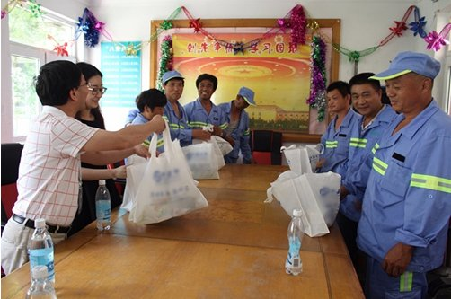

V金融携上海五角场镇工会联合会关爱环卫工人
发布时间:2016-7-20
相关媒体链接: 腾讯新闻
返回媒体报道列表>>
继7月5日V金融与上海市杨浦区五角场镇党建办慰问两位孤贫老人后， 近日V金融代表和上海市五角场镇工会联合会领导， 又一起赴上海市市容环卫局杨浦区下属单位，为炎炎烈日下仍然坚守岗位的市容环卫工人们， 送去了夏季慰问品，表达了对他们的感谢与敬意。 城市市容清洁是一项非常艰巨的工作，一名一线的环卫工每天的工作包括： 清扫街道、行人路和小巷;清倒垃圾筒内的垃圾， 擦洗垃圾筒;清理下水道和沟渠以免阻塞;清理草地上的垃圾， 保持草地整洁等。而这样的工作并非一次就能完成，丢垃圾的情况周而复始， 那环卫工人的工作也将不会停歇。看着环卫工人们晒得黝黑的皮肤、淳朴的笑脸， V金融希望在送去一份清凉的同时，也将对环卫工人的尊敬传递出去： V金融强烈倡议，在这酷热难耐的季节，不乱丢垃圾共同维护环境卫生， 让我们“可爱的环卫工人们”歇一歇吧!
在慰问活动中，V金融代表与上海市市容环卫局杨浦区下属单位领导， 进行了深入的交流与沟通。市容环卫工人们在接过慰问品后，都露出了率真憨厚的笑容， 连声道谢，并纷纷表示：V金融的这份心意，是对他们工作的一份认可，让他们感受到了来自社会的关爱和关注。 他们将继续坚守，做好本职工作，为更加优美、舒适的城市环境而不懈努力!
正如市容环卫工人们热忱地对待自己的工作一样，V金融在发展的过程中， 对公益事业坚守着一份热忱，愿为更多的人带去关爱， 不忘初心!也希望通过V金融的不懈努力， 让更多的人关注到那些默默为社会美好做出努力的人们!
